Website Design and Front-end Development
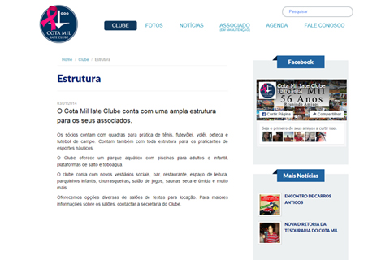
Cota Mil - Yacht Club
Cota Mil is a known yacht club in Brazil with a wide range of sports activities.
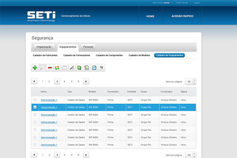
SETI
Software interface for a Silverlight web application.
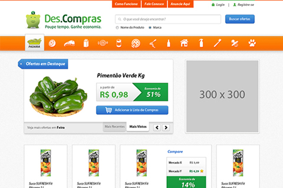
Descompras
Website design for Descompras, a website about supermarket products comparison. UI design, since concept, and front-end coding.

A2Designer - Digital Agency
Website for the brazilian digital agency A2Designer. Interface Design and Front-end implementation.

PPGEU - Graduate Program in Urban Engineering
Website design and customization for the Graduate Program in Urban Engineering at Federal University of São Carlos.

Pedro e Sueli - Beauty Salon
Full website design and development of Pedro e Sueli - Beauty Salon in Wordpress. Included wireframing, concepts and front-end coding.
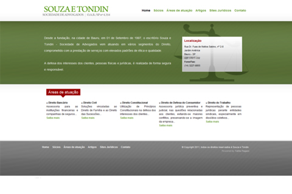
Souza e Tondin - Attorneys at Law
Website of a Lawyers Society in Bauru. The website is currently under maintenance.
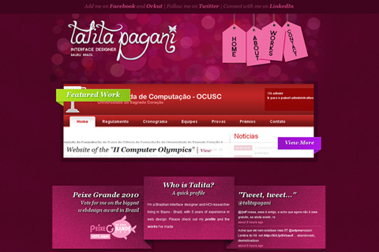
TalitaPagani.com - Previous layout of my personal website
2010 layout of my this website.
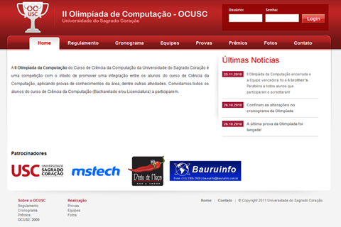
II Computer Olympics at Universidade do Sagrado Coração
The 2nd Computer Olympics at Universidade do Sagrado Coração, in Bauru - Brazil, is an event which proposes the integration of the Computer Science's students. The new website has a login area for the teams and an administrative system for the organization comitee.
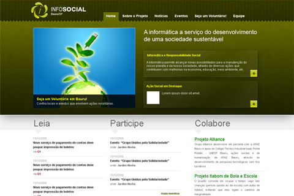
InfoSocial (Academic Project)
InfoSocial was a website create for the 1st Computer Olympics at Universidade do Sagrado Coração (USC - Brazil) about social responsability through digital media and web.

eDirectory - demo version for users
Redesign of the eDirectory product layout while working at Arca Solutions.
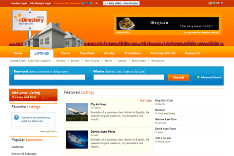
eDirectory - Real Estate theme
While working as Lead Web Designer at eDirectory Product Team (a product by Arca Solutions), I developed several predefined themes focusing on popular business segments. One of them was the Real Estate theme.
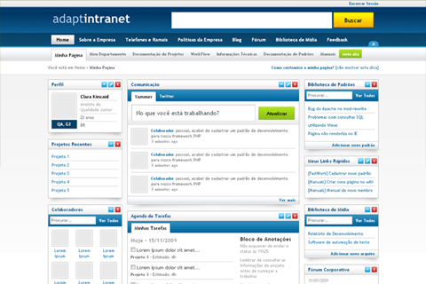
Adaptintranet (Course Completion Work)
Adaptintranet was my Course Completion Work when I majored in Computer Science and presents an intelligent and adaptive interface for corporate intranets. It was developed using approaches of Human-Computer Interaction, Interaction Design and Artificial Intelligence.
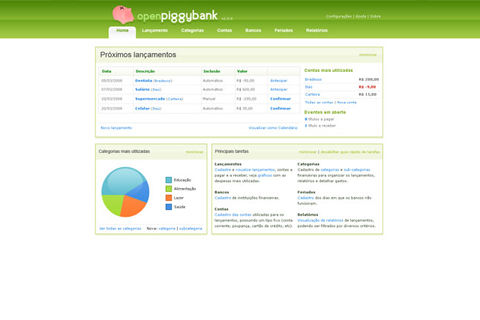
OpenPiggyBank
OpenPiggyBank was an open-souce and portable application developed with web technologies focused on management of personal finance.
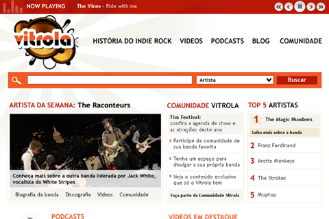
Vitrola (Personal Project)
Vitrola was a project I developed while taking a course about Web and Interface Design. The proposal was a website about indie rock and I applied the concepts I learned in the course.